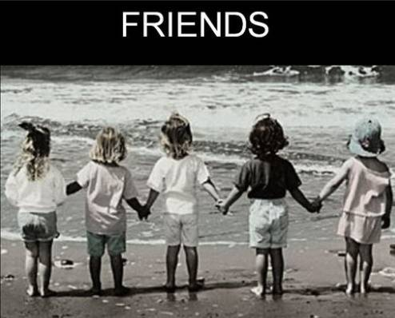
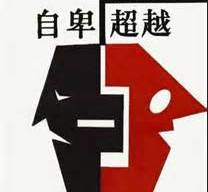

Time: 19:30-21:30, Friday, 25th Nov.
Venue: Room B221, New Main Building, Beihang University
即兴演讲环节
朋友
Toastmaster - gastby
Table Topic Master - Britney

阿拉伯传说中有两个朋友在沙漠中旅行，
在旅途中的某点他们吵架了，
一个还给了另外一个一记耳光。
被打的觉得受辱，一言不语，在沙子上写下：
"今天我的好朋友打了我一巴掌。"
他们继续往前走。直到到了沃野，
他们就决定停下。
被打巴掌的那位差点淹死，幸好被朋友救起来了。
被救起后，他拿了一把小剑在石头上刻了：
"今天我的好朋友救了我一命。"
一旁好奇的朋友问说：
为什麽我打了你以后，你要写在沙子上，
而现在要刻在石头上呢？
另个笑笑的回答说：
当被一个朋友伤害时 ，
要写在易忘的地方 ，
风会负责抹去它；
相反的如果被帮助 ，
我们要把它刻在心里的深处 ， 那里任何风
都不能抹灭它。
朋友的相处伤害往往是无心的，帮助却是真心的，
忘记那些无心的伤害；铭记那些对你真心帮助，
你会发现这世上你有很多真心的朋友
这个故事貌似俱乐部现任主席Joshua在他的以前的cc演讲中也讲到过啊
不过，”朋友 “这两个字
你生活中最离不开的角色，你有什么想法或者是故事想要和我们一起分享么？
本周五即兴演讲环节环节欢迎你们的到来~~
备稿演讲环节
自卑与超越 (CC 1)
演讲者 - 郭天辉

从Flair初到头马的拘谨，到现在能够在台上流利的展示自我，他真的做到了很多很多，这次flair终于带来了他的头马CC首秀，“自卑与超越”，是看完这本书的感想还是他自己的心路历程呢？让我们一起来聆听这位爱笑爱闹爱戴帽（源于某次会议中flair引用小王子中脱帽邀掌声的情节）的大男孩的故事吧？
霖文不讳 (CC 8)
演讲者 - 张博文
" 随口说的秘密就像你的不期而遇
给凡杂生活一点点创意
拒绝说教 只讲内心滋味
提笔临文 恕我直言不讳 "
博文携CC8回归，题目也是他和他的小伙伴自创的微信公众号名字
小编浏览了下内容还是很丰富的~
那么博文要讲的是不是也和题目一样呢？
”提笔临文 恕我直言不讳“
周五晚上，我们一同见证~~
What is Toastmasters?
Toastmasters International (TI) is a non-profit educational organization that operates clubs worldwide for thepurpose of helping members improve their communication, public speaking, and leadership skills.

https://mp.weixin.qq.com/s/i1SdchNcnirjBtDFO-KUOQ
本页为抢救式本地归档，图文已永久保存。